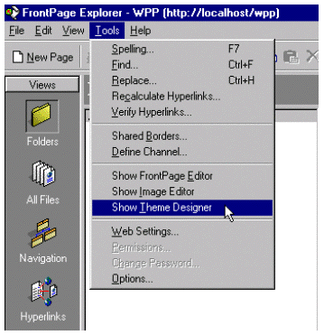
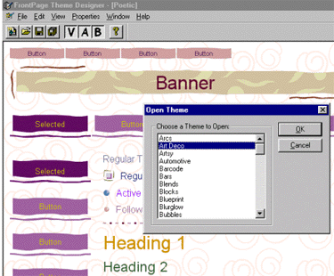
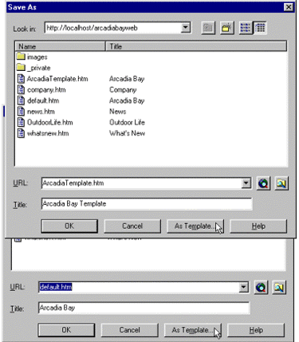
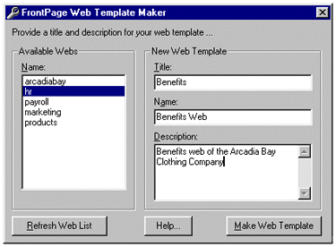
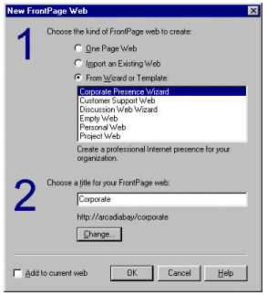

|
| ||
|
| ||
April 15, 1998
The Microsoft® FrontPage® Web site creation and management tool lets you easily create and manage great looking Web sites directly out of the box. But FrontPage can also be customized and extended in a variety of ways, from creating custom Themes to creating custom FrontPage Components that provide additional advanced functionality to users of FrontPage. While the FrontPage Software Development Kit (SDK), available both on the FrontPage 98 CD and on the FrontPage Web site, contains complete information on these extensibility features this paper will introduce you to the following topics:
FrontPage 98 ships with over 50 professionally designed themes that can be applied to your Web site using the FrontPage Explorer's Themes view. By design, the appearance and properties of a theme's individual elements cannot be modified in the FrontPage Editor by the user. However, you can easily modify or customize a theme using the FrontPage Theme Designer, a tool that is included on the FrontPage 98 CD-ROM.
To install the Theme Designer, exit the FrontPage Explorer and the FrontPage Editor (if they are running) and run tdsetup.exe from the \SDK\THEMES\DESIGNER folder on the FrontPage 98 CD-ROM or from the decompressed SDK folder created after downloading and installing the SDK from the FrontPage Web site. After Setup has completed, launch the FrontPage Explorer. To start the Theme Designer, choose the Show Theme Designer command from the FrontPage Explorer's Tools menu.

Figure 1. Starting the Theme Designer
The easiest way to begin work on a new or customized theme is to open an existing one. From the Theme Designer's File menu, choose Open Theme to select a theme from a list of installed themes (for example, "Art Deco" as shown below). This list matches the installed themes available in the FrontPage Explorer's Themes view. You can also choose the New Theme command, which opens a generic theme that you can then customize.

Figure 2. Opening an existing theme
The Theme Designer saves your newly completed or updated theme into the FrontPage 98 installation on your computer (usually in the c:\Program Files\Microsoft FrontPage\Themes folder) where it is available for use by the FrontPage Explorer and FrontPage Editor. However, the Theme Designer will not modify any of your FrontPage-extended Web sites. If you are modifying an existing custom theme, FrontPage-extended Web sites that use previous versions of that custom theme will remain unchanged.
To use your new or updated custom theme in a FrontPage-extended Web site, you must open that FrontPage-extended Web site in the Explorer and apply or re-apply the custom theme. If your custom theme is only applied to selected pages instead of the entire FrontPage-extended Web site, you must apply your custom theme to at least one of the pages in the FrontPage-based Web site and then recalculate hyperlinks. Repeat this procedure for all the FrontPage-based Web sites on any workstations or Web servers where you would like to use your custom theme.
You can easily share your new custom theme or updated custom theme with other users of FrontPage 98. When a user of FrontPage 98 opens any FrontPage-extended Web site that uses your custom theme, the custom theme or new update is automatically downloaded into the FrontPage 98 installation on that user's computer, provided that the custom theme was not present or merely an older version was available.
If you do not wish to grant a user permission to edit your FrontPage-based Web site, you can create a new FrontPage-based Web site specifically for the purpose of distributing your custom theme. Users that download your custom theme can then use your new or updated custom theme in a FrontPage-based by opening that FrontPage-based in the FrontPage Explorer and applying or re-applying the custom theme.
For more information on FrontPage Themes and the Theme Designer refer to "FPDevkit.doc" located in the \SDK folder on the FrontPage 98 CD-ROM or in the expanded \SDK folder after downloading and installing the FrontPage SDK from the FrontPage Web site at http://microsoft.com/frontpage/resources/default.htm  .
.
FrontPage includes several Web page and Web site templates that give you a quick, automated, and consistent way to create Web content. Yet, it's also possible to create custom templates that can be used by members of your Web development team or organization. For example, perhaps your company has a particular feedback form that contains common questions relevant to all the groups at the company. A template of this form could be created so any group wanting to create a feedback form on their portion of the Web site can easily create a consistent and relevant feedback from using the template.
A template is a special directory on a user's local disk that contains prototype Web content (Web pages, text files, images, etc.). The files in the template directory can be uploaded to a Web server and then edited and managed using FrontPage. There are three kinds of templates in FrontPage:
| Template Type | Creates | Location |
|---|---|---|
| Page | a single page | [FrontPageRoot]\pages |
| Web | several interconnected pages | [FrontPageRoot]\webs |
| Frameset | a frameset pages | [FrontPageRoot]\frames |
The following section describes the easiest way to create a page template, a Web site template, and a frameset template.
Page templates can be easily created by end-users. In the FrontPage Editor, choose the "Save As" item on the File menu, and then click on the "As Template" button. Fill in the information, press OK, and a complete page template is automatically created.

Figure 3. Saving a template
The FrontPage SDK includes a Visual Basic®-based program called Web Template Maker that automates the process of creating a Web site template when used with the FrontPage Personal Web Server. The Web Template Maker will not work unmodified with other kinds of Web servers. To use the Web Template Maker, follow these steps:

Figure 4. The Web Template Maker
A frameset divides up a page into independent scrollable regions that can each contain a separate Web page. Authors can cause documents to be loaded into individual frames regions by using a special "TARGET" attribute that can be attached to most kinds of links. Previous versions of FrontPage included a separate Frames Wizard for creating and editing HTML framesets. In FrontPage 98, frames documents can be edited in-place directly with the FrontPage Editor.
Frameset templates can be easily created by end-users. In the FrontPage Editor, create a frameset layout, choose the "Save As" item on the File menu, and then click on the "As Template" button. Fill in the information, press OK, and a complete frameset template is automatically created.
The FrontPage Editor allows authors to choose among several frameset templates when creating new pages. These templates are stored in the FrontPage "frames" directory (c:\Program Files\Microsoft FrontPage\frames\ by default).
A wizard simplifies the process of creating common types of Web sites and Web pages. A wizard is an independent executable program that typically collects input from a user in a series of dialog boxes, then places OLE automation calls to drive FrontPage by "remote control" to create the new Web sites or Web pages. A wizard can be written in any programming language that is capable of calling OLE automation functions.

Figure 5. The New FrontPage Web wizard
Just like a template, a wizard is contained in a special directory on a user's local disk.
A wizard directory must be called *.wiz, such as sample.wiz. In order to be recognized by FrontPage, this directory must be placed in either the FrontPage-baseds or pages directory, depending on what kind of content it holds. The path to these directories can be determined from settings in the frontpg.ini file installed in a user’s Windows® directory:
In general, a page wizard creates a single page, while a Web wizard creates several interconnected pages. However, this distinction is not enforced. A wizard is not restricted to certain actions because of its type. However, page wizards are always run from the FrontPage Editor, while Web wizards are always run from the FrontPage Explorer.
A Web wizard typically presents a series of dialog pages to collect user input, and then generates one or more HTML pages in the FrontPage temp directory (typically "C:\Program Files\Microsoft FrontPage\temp") based on the selected options. These pages are then uploaded to the current Web site, along with any static resources, such as images that are kept in the wizard directory. If a user selects the option to create a new FrontPage-extended Web site rather than adding to the current one, the FrontPage Explorer will create a new Web site before starting the wizard.
A page wizard typically presents a series of dialog pages to collect user input, then generates a single HTML page in the FrontPage temp directory based on the selected options. The page is then loaded into the FrontPage Editor.
The creation of Wizards is more complex than creating page or Web site templates as it requires programming in a high level language such as C++ or Microsoft Visual Basic. For complete details on creating custom Wizards for FrontPage please refer to the FrontPage SDK located in the \SDK folder on the FrontPage 98 CD-ROM or in the expanded \SDK folder after downloading and installing the FrontPage SDK from the FrontPage Web site at http://microsoft.com/frontpage/resources/default.htm  .
.
FrontPage also includes an easy way to extend the menus of the FrontPage Editor and Explorer. You can add new menu items to both the FrontPage Explorer and the FrontPage Editor through the Windows registry. The entries you create in the Windows registry can specify the following parameters for your custom menus:
In addition, the FrontPage Editor includes an additional customization feature, which lets you specify HTML that should be automatically inserted into the current page as the insertion point, when the menu command is invoked, without having to write any code at all.
For more information on customizing your FrontPage menus refer to the SDK document "FPDevkit.doc" located in the \SDK folder on the FrontPage 98 CD-ROM or in the expanded \SDK folder after downloading and installing the FrontPage SDK from the FrontPage Web site at http://microsoft.com/frontpage/resources/default.htm  .
.
Designer HTML is the term we use to describe an important new extension to the FrontPage HTML Markup component. With Designer HTML, developers get two key pieces of new functionality in FrontPage:
The ability to specify an alternate display in the Editor for a piece of unknown or unattractive HTML
The ability to insert, or drag and drop pieces of unknown HTML into the Editor
Combined with menu customization, these two features provide a powerful, well-integrated HTML extensibility mechanism, which is WYSIWYG and entirely code free. Below are several examples, which show off the power and elegance of this HTML extensibility design.
To make the power of Designer HTML a bit clearer, consider these scenarios:
There are many more exciting integration opportunities available with Designer HTML, but this gives you some idea of the range of possibilities. Refer to the SDK located in the \SDK folder on the FrontPage 98 CD-ROM or in the expanded \SDK folder after downloading and installing the FrontPage SDK from the FrontPage Web site at http://microsoft.com/frontpage/resources/default.htm  ). You should also investigate the sample files in the Designer HTML folder in the SDK, and the sample files that ship with FrontPage itself. These offer some very specific examples of what is possible.
). You should also investigate the sample files in the Designer HTML folder in the SDK, and the sample files that ship with FrontPage itself. These offer some very specific examples of what is possible.
If you want more programmatic control of FrontPage to create automated solutions, such as a publishing processing that perhaps automatically organizes Web-site contents based on meta-info properties, you can use OLE automation from any programming language that supports it, such as Visual Basic or even Visual Basic for Applications as found in the Microsoft Office applications, to control or drive FrontPage.
There are three main components in FrontPage that can be controlled externally through OLE automation. Each component has a separate OLE identifier in the Windows Registry on a user's machine. The identifiers correspond to the FrontPage Explorer (FrontPage.Explorer.3.0), the FrontPage Editor (FrontPage.Editor.3.0), and the FrontPage To Do List (FrontPage.ToDoList.3.0). Each component is also accessible with a generic identifier that resolves to the current release of FrontPage; these names are FrontPage.Explorer, FrontPage.Editor, and FrontPage.ToDoList.
The FrontPage Explorer is the main interface for OLE automation. It operates on site-level objects. A Web site is defined as a set of documents underneath a given URL directory that are made available by a Web server running the FrontPage Server Extensions.
For example, http://www.microsoft.com/myweb/ is a collection of interconnected documents all residing under the directory myweb on the server www.microsoft.com. There is also the Root Web on this server (accessed via the URL http://www.microsoft.com/), and several other top-level Web sites at /web1, /web2, and so on. FrontPage can administer and author in the Root Web and its immediate descendants.
A FrontPage-based Web site has security attributes that define permissions for administrators, authors, and users. An administrator can create and delete Web sites, and set permissions for authors. An author can create, edit, and delete documents inside a Web site, and set permissions for users. A user can view the Web site using any browser program.
The current FrontPage Explorer OLE interface can do the following:
The FrontPage Editor is a WYSIWYG Web page editor for HTML documents. Web pages are stored in .htm or .html files on the Web server. The FrontPage Editor can open, edit, and save HTML files in the current FrontPage-based Web site being viewed by the FrontPage Explorer, or in the local file system.
FrontPage Editor operations exposed to automation include:
The FrontPage To Do List is a flexible grid-like object that manages and displays a list of tasks to be performed on the FrontPage-based Web site currently opened by the FrontPage Explorer. Tasks are removed from the To Do List as they are completed. Each task has a set of attributes that include name, priority, description, creator, and associated Web document. Tasks can be added to the To Do List either by typing them in or as a result of running other programs that manipulate Web pages. For example, a wizard or template typically places tasks on the To Do List for each Web page it creates that requires some further customization.
The FrontPage To Do List OLE interface can be used to add new tasks and to hide or display the To Do List interface.
The ability to drive FrontPage through an OLE Automation interface opens up tremendous possibilities for Web administrators and developers to extend or automate FrontPage functionality. While this brief introduction merely scratches the surface of these capabilities the FrontPage SDK contains complete details, including the exposed FrontPage objects and methods. While FrontPage does not yet contain a complete exposed object model that maps to every feature, function, and parameter in FrontPage, what is available provides tremendous possibilities.
For more information on using OLE automation with FrontPage as well as everything else discussed in this paper see the SDK documentation and samples located in the \SDK folder on the FrontPage 98 CD-ROM or in the expanded \SDK folder after downloading and installing the FrontPage SDK from the FrontPage Web site at http://microsoft.com/frontpage/resources/default.htm  .
.
While the standard Microsoft FrontPage features makes it easy to create and manage a FrontPage-based Web site it is also capable of a great deal of customization and extensibility that further enhance its power and ease-of-use. With tools like the Theme Designer and features such as Designer HTML and an exposed OLE interface, all of which is included with and documented in the FrontPage Software Developer's Kit, you can now easily create powerful Web site creation and management extended solutions to even further increase your organization's information sharing and productivity.
Did you find this material useful? Gripes? Compliments? Suggestions for other articles? Write us!
© 1999 Microsoft Corporation. All rights reserved. Terms of use.